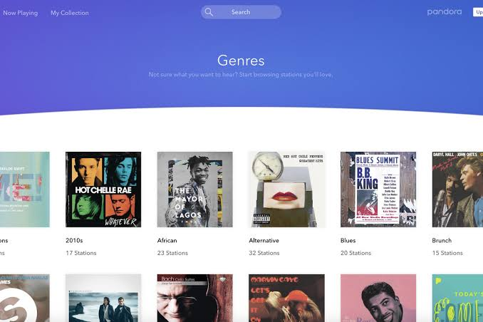

There are various websites and apps to use to listen to music. On this page, we're diving into some options you can choose from.
Spotify
Spotify is a fantastic free music streaming service with millions of songs available to listen to whenever and as often as you like. Spotify's free music can be accessed via a web browser, mobile device, or desktop manager that you can install on your computer. Search and listen to your favorite music, make playlists, and share music with your friends after you're set up. There are also curated playlists available. There are many free online tools for making a Spotify playlist. Premium subscriptions allow you to download Spotify music, listen to music without advertisements, stream higher-quality audio, play songs on demand, read song lyrics, and skip tracks as frequently as you want. Individuals, families, and students all have their own, and they're typically all the same.

YouTube Music
YouTube Music is a section of YouTube dedicated to music videos and songs. You can search for music, make playlists, and subscribe to artists' channels to receive alerts when a new song is released, just like on the main YouTube site. Playlists for specific genres, decades, activities, or emotions, as well as categories for children, can be found. You may also submit your music to YouTube Music and listen to it from anywhere. You can listen ad-free, offline, and with your screen off with a premium membership (on mobile). Individual and family options are available.
Pandora
Pandora is an excellent resource for finding tunes by your favorite musicians as well as discovering new music. The program creates an online streaming radio station depending on your preferences when you search for an artist, genre, or composer. You can download the free Pandora app for your mobile device in addition to listening to free music online. You'll hear songs and artists similar to those you already enjoy while listening to your personalized radio station. You can then instruct Pandora to play music that sounds similar to what you're listening to or to take a different route. You can make up to 100 different personalised stations with music you enjoy.
SoundCloud
SoundCloud allows users to upload music for free, making it an excellent resource for discovering new musicians. On SoundCloud, you can explore what's hot and browse genres including disco, electronic, country, ambient, and more. There's also a search function for finding tracks, bands, and podcasts quickly. Follow artists to keep up with their latest releases, and favorite tracks and playlists to save music to your personal library. SoundCloud Go+ removes advertisements and improves audio quality while allowing you to listen without an internet connection. You can also listen to premium tracks. There is a free 30-day trial and a 50% discount for students. There are many free SoundCloud smartphone apps available.